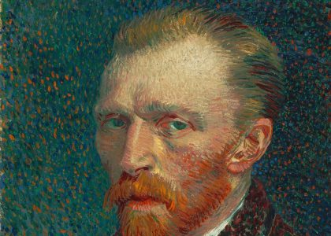
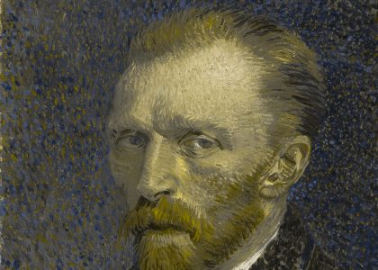
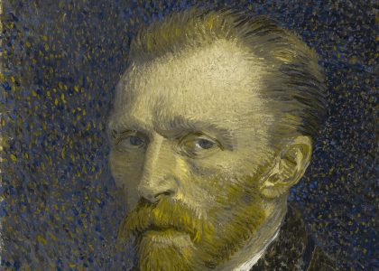
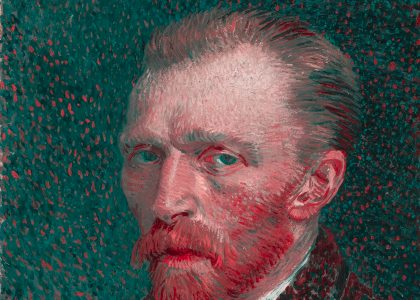
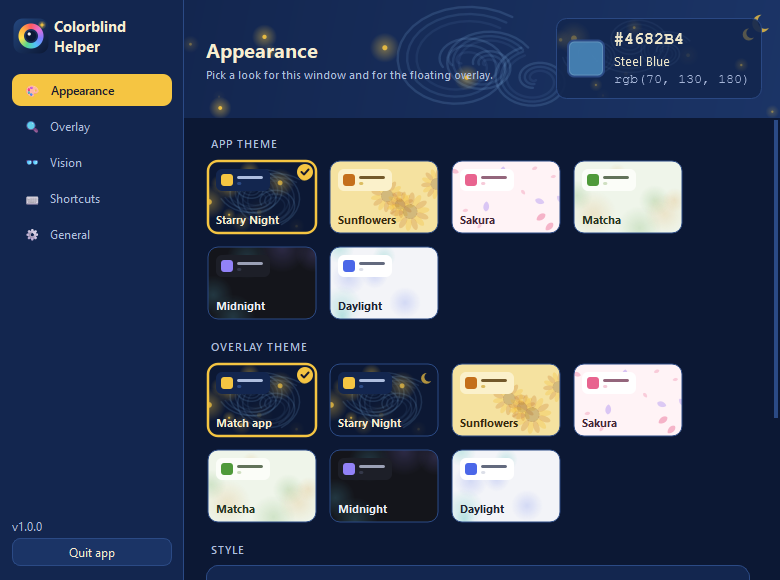
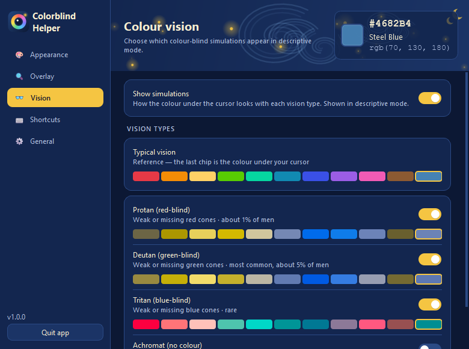
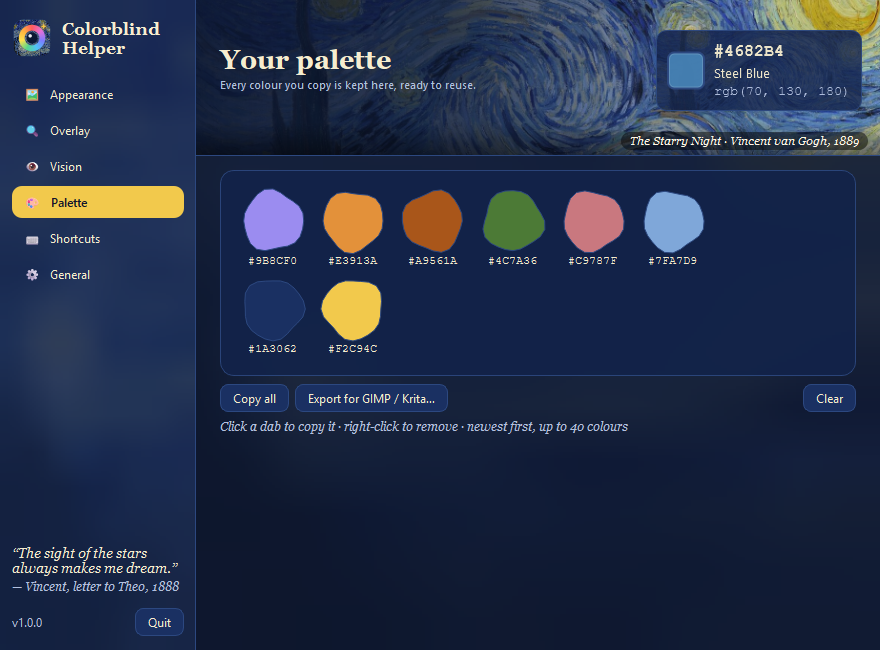
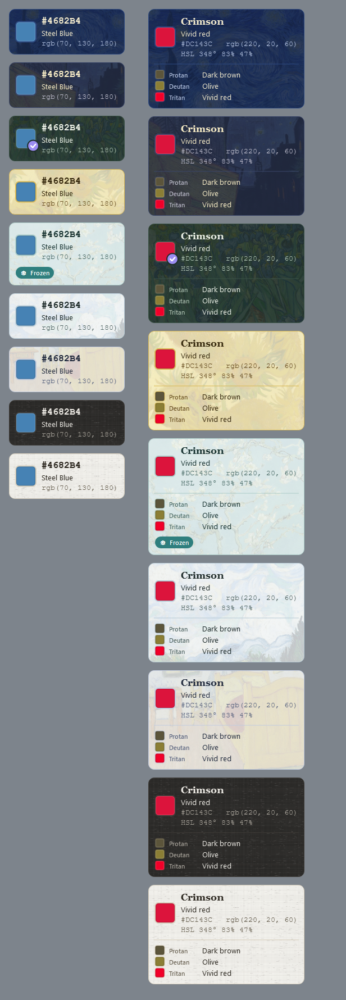

A color identifier that follows your cursor
Around 1 in 12 men and 1 in 200 women have a color vision deficiency. Colorblind Helper sits quietly in your tray and labels colors anywhere: in web pages, photos, charts, games, design tools and paintings.
Color names, instantly
Closest named color (CIEDE2000 matching), HEX and RGB values in a small overlay next to the cursor.
Descriptive mode
Plain words like “light muted teal” or “dark brown”, plus HSL, HSV, CMYK and WCAG contrast ratios.
Through other eyes
See how a color reads with protanopia, deuteranopia, tritanopia or achromatopsia, so you know what could be confused.
An artist’s palette
Every color you copy is saved as a paint dab. Reuse it with a click or export it to GIMP, Krita or Inkscape.
Live in a painting
Themes drawn from Van Gogh’s Starry Night, Sunflowers, Irises, Almond Blossom and more.
Made to stay out of the way
Click-through overlay, global hotkeys, run at startup, about 1% CPU while idle. Windows & macOS.
Vincent, through other eyes
Van Gogh’s 1887 self-portrait is a good red–green test: a red beard against a green ground. Here it is as each kind of colour vision might see it, simulated with the Machado, Oliveira & Fernandes (2009) model, the same one the app uses.




Screenshots




How to identify a color in 3 steps
- Download the app for Windows or macOS and run it. There’s nothing to install.
- Point your mouse at any color. The overlay shows its name, HEX and RGB values.
- Press Ctrl+Shift+D for descriptive mode or Ctrl+Shift+C to copy the color into your palette.
Questions
How can a color blind person tell what color something is on screen?
Run Colorblind Helper and move your mouse over anything. A small overlay next to the cursor shows the color’s name (for example “Crimson”), a plain-language description such as “Vivid red”, and its HEX and RGB values.
Is it free?
Yes. It’s free and open source under the MIT license.
Which types of color blindness does it simulate?
Protanopia (red-blind), deuteranopia (green-blind), tritanopia (blue-blind) and achromatopsia (no color). You can switch any combination on or off.
Can color blind artists use it while painting digitally?
Yes. The overlay works over any app, including Photoshop, Krita, Clip Studio and your browser. Copied colors land in a palette you can export as a .gpl file.
Does it work on macOS?
Yes. Open the app, then allow Screen Recording in System Settings → Privacy & Security so it can read the color under the cursor.
Does it collect any data?
No. It runs entirely on your computer, needs no account and makes no network requests.
“Colour expresses something in itself.”— Vincent van Gogh, letter to Theo, 1885